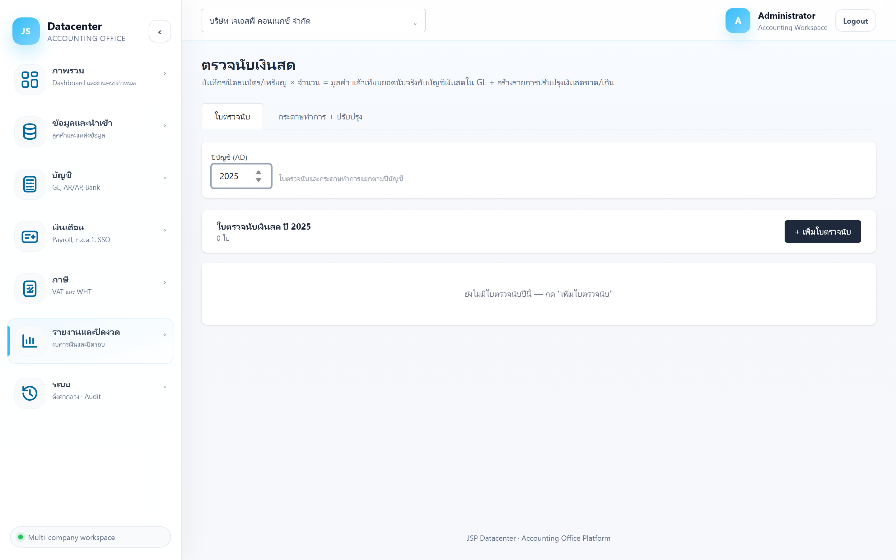

ตรวจนับเงินสด
บันทึกใบตรวจนับเงินสดแบบ ชนิดธนบัตร/เหรียญ × จำนวน = มูลค่า แล้วเทียบยอดนับจริงกับ บัญชีเงินสดใน GL พร้อมสร้างรายการปรับปรุง เงินสดขาด/เกิน
เงินสดในมือเป็นรายการที่ตรวจสอบยากที่สุดและเสี่ยงที่สุด — ผู้สอบบัญชีจะขอดูใบตรวจนับ ณ วันสิ้นงวดเสมอ หน้านี้ทำให้ใบตรวจนับเป็นหลักฐานถาวรในระบบ ไม่ใช่กระดาษที่หายได้
1. การเข้าใช้งาน
- เลือกบริษัทลูกค้า ที่แถบด้านบน
- เปิดเมนู รายงานและปิดงวด → ตรวจนับเงินสด
- กรอก ปีบัญชี (ค.ศ.) — ใบตรวจนับและกระดาษทำการแยกตามปีบัญชี
2. แท็บ “ใบตรวจนับ”

| คอลัมน์ | ความหมาย |
|---|---|
| วันที่นับ | วันที่ทำการตรวจนับ (ปกติคือวันสิ้นรอบบัญชี) |
| จุดเก็บ/อ้างอิง | ที่เก็บเงินสด เช่น “เงินสดย่อยสำนักงานใหญ่”, “ลิ้นชักหน้าร้าน” |
| บัญชีเงินสด | บัญชี GL ที่ใบนี้ผูกอยู่ — ใช้ตอนเทียบยอดและสร้างรายการปรับปรุง |
| นับได้รวม | ผลรวมมูลค่าที่นับได้จริง |
| แก้ไข | ปุ่มท้ายแถว · ใบที่ปิดแล้วมีป้าย (ปิด) |
ฟอร์มใบตรวจนับ
กรอกทีละแถวตามชนิดเงิน — ระบบคูณให้เอง
| ช่อง | คำอธิบาย |
|---|---|
| วันที่นับ | วันที่ตรวจนับ |
| จุดเก็บ/อ้างอิง | ระบุที่เก็บให้ชัด เพราะบริษัทหนึ่งอาจมีหลายจุด |
| บัญชีเงินสด | บัญชี GL ที่ใบนี้จะไปเทียบด้วย |
| มูลค่าหน้าตั๋ว × จำนวน = มูลค่ารวม | กรอกทีละชนิด (1000, 500, 100, … เหรียญ) ระบบคูณและรวมให้เป็น รวมนับได้ |
| หมายเหตุ | บันทึกสิ่งผิดปกติที่พบ เช่น มีใบสำคัญจ่ายที่ยังไม่ลงบัญชีอยู่ในลิ้นชัก |
เป็นรูปแบบมาตรฐานของใบตรวจนับที่ผู้สอบบัญชียอมรับ — บอกได้ว่านับจริง ไม่ใช่กรอกยอดรวมย้อนหลังให้ตรงบัญชี
3. แท็บ “กระดาษทำการ + ปรับปรุง”
รวมใบตรวจนับของปีนั้นแล้วเทียบกับ GL
| ส่วน | ความหมาย |
|---|---|
| ตารางใบตรวจนับ | จุดเก็บ/อ้างอิง · บัญชีเงินสด · นับได้รวม พร้อมยอด รวมนับได้ |
| ตารางเทียบ GL | บัญชี · นับจริง · ตาม GL — ส่วนต่างคือเงินสดขาดหรือเกิน |
นับจริง < GL = เงินสดขาด (บัญชีบอกว่ามีมากกว่าที่นับได้) · นับจริง > GL = เงินสดเกิน — ทั้งสองกรณีต้องหาสาเหตุก่อน ไม่ใช่ปรับให้ตรงทันที สาเหตุที่พบบ่อยคือมีใบสำคัญที่ยังไม่ได้ลงบัญชี
สร้างรายการปรับปรุงเงินสดขาด/เกิน
- ติ๊กเลือกใบตรวจนับ ที่จะใช้ปรับปรุง (ถ้าไม่เลือกจะขึ้น “เลือกอย่างน้อย 1 ใบ”)
- กดปุ่ม สร้างรายการปรับปรุงเงินสดขาด/เกิน
- ตรวจใบที่สร้างได้ที่ กระดาษทำการปิดงบ
ทำเมื่อหาสาเหตุจนสิ้นสุดแล้วและยอมรับส่วนต่างเป็นเงินสดขาด/เกินจริง — ถ้าปรับทุกครั้งที่ไม่ตรงโดยไม่หาสาเหตุ จะกลบปัญหาที่ควรถูกตรวจพบ
4. ปัญหาที่พบบ่อย
| อาการ | สาเหตุและวิธีแก้ |
|---|---|
| ยังไม่มีใบตรวจนับ | ต้องบันทึกเอง — ไม่ได้มาจาก Express |
| ยอดตาม GL ขึ้นเป็น 0 | เลือกบัญชีเงินสดผิด หรือยังไม่ได้นำเข้า/post ข้อมูลปีนั้น |
| ส่วนต่างเท่ากับยอดที่เพิ่งจ่ายไป | มีใบสำคัญจ่ายที่ยังไม่ได้บันทึกใน Express — บันทึกที่ต้นทางแล้วนำเข้าใหม่ ดีกว่าปรับปรุง |
| มีเงินสดหลายจุด | สร้างใบตรวจนับแยกตามจุดเก็บ แล้วผูกบัญชีเงินสดของแต่ละจุด — กระดาษทำการรวมให้เอง |